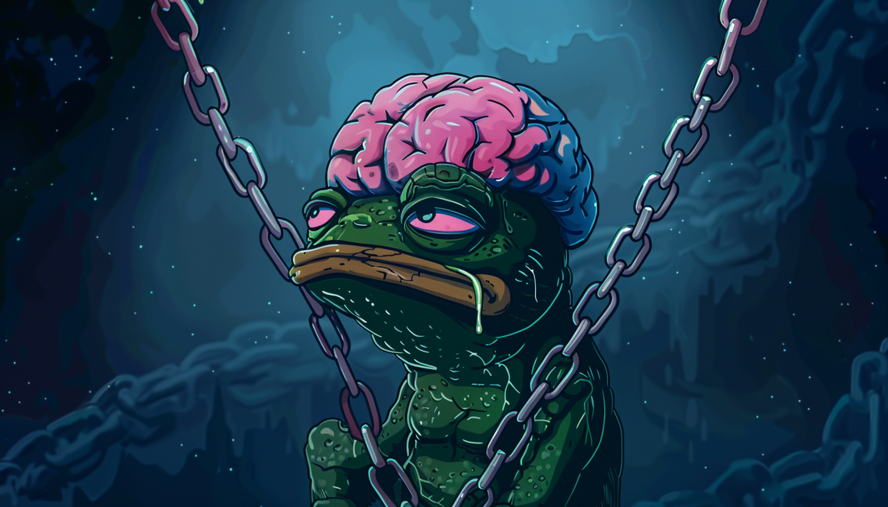

AI Website Creator
Pepe Unchained is a Layer 2 blockchain solution specifically developed to address the scalability and transaction speed issues faced by many existing blockchain networks. Layer 2 solutions operate on top of existing blockchains (Layer 1), providing enhanced performance and lower fees without compromising security. Pepe Unchained leverages this technology to offer a seamless experience for its users, making it an attractive option for both novice and experienced crypto investors.
Step 1: Install a crypto wallet
Step 2: Load up your wallet with a preferred cryptocurrency
Step 3: Connect crypto wallet to the presale page
Step 4: Complete the purchase
Scalability and Speed
Pepe Unchained is built to handle a high volume of transactions per second (TPS), significantly improving upon the limitations of traditional Layer 1 blockchains. This scalability ensures that the platform can support a growing user base without experiencing slowdowns or increased transaction costs.
Low Transaction Fees
One of the primary benefits of Layer 2 solutions is the reduction in transaction fees. Pepe Unchained offers users the ability to transact with minimal costs, making it an ideal platform for microtransactions and high-frequency trading.
Security and Decentralization
Security is a top priority for Pepe Unchained. The platform employs advanced cryptographic techniques to ensure the integrity and safety of user funds. Additionally, as a decentralized network, Pepe Unchained eliminates the risks associated with central points of failure, providing a more resilient and trustworthy ecosystem.
Meme Coin Integration
At its core, Pepe Unchained is designed to support meme coins, digital assets inspired by popular internet memes. These coins have gained significant popularity due to their cultural relevance and viral nature. Pepe Unchained aims to harness this trend by offering a dedicated platform for the creation, trading, and utilization of meme coins.
Central to the Pepe Unchained ecosystem is the PEPE token, the native currency of the platform. The PEPE token is used for various functions within the ecosystem, including transaction fees, staking, governance, and as a medium of exchange for meme coins.
Staking and Rewards
Users can stake their PEPE tokens to support the network and earn rewards in return. This incentivizes participation and helps secure the platform, ensuring its long-term stability and growth.
Governance
PEPE token holders have the power to participate in the governance of the platform. Through a decentralized voting system, users can propose and vote on changes to the network, ensuring that the community has a direct say in its development and direction.
Utility
The PEPE token serves as the primary medium of exchange within the Pepe Unchained ecosystem. Users can use it to trade meme coins, pay for transaction fees, and access various services offered by the platform.
The Pepe Unchained ecosystem is designed to be comprehensive and user-friendly, offering a range of services and tools to support the creation, trading, and management of meme coins.
PepeSwap
PepeSwap is the platform's decentralized exchange (DEX), allowing users to trade meme coins and other digital assets directly from their wallets. With its intuitive interface and robust trading features, PepeSwap aims to become the go-to marketplace for meme coin enthusiasts.
PepeWallet
PepeWallet is a secure, multi-functional wallet designed to store, manage, and transact PEPE tokens and meme coins. The wallet integrates seamlessly with the Pepe Unchained platform, providing users with a convenient and secure way to manage their digital assets.
PepeLaunchpad
PepeLaunchpad is a launch platform for new meme coin projects. It offers developers the tools and resources needed to create and launch their own meme coins, fostering innovation and growth within the ecosystem.
PepeNFT Marketplace
Recognizing the growing popularity of non-fungible tokens (NFTs), Pepe Unchained also features a dedicated NFT marketplace. Users can create, buy, sell, and trade NFTs, further expanding the use cases for meme coins and digital art within the platform.
Pepe Unchained is poised to become a major player in the crypto space, particularly within the niche of meme coins and Layer 2 solutions. By addressing key issues such as scalability, transaction fees, and security, Pepe Unchained offers a compelling alternative to existing blockchain platforms. Its focus on meme coins and community-driven governance further sets it apart, appealing to a diverse and passionate user base.
As the project continues to develop, Pepe Unchained aims to introduce additional features and improvements, solidifying its position as a leading platform for meme coins and decentralized finance. Whether you're a crypto veteran or new to the space, Pepe Unchained offers a unique and exciting opportunity to explore the potential of blockchain technology and digital assets.
Here’s a quick look at the potential highs and lows of $WAI’s price between 2024 and 2030.
Year Forecast Low ($) Forecast High ($)
2024 0.000706 0.0045
2025 0.0037 0.01
2030 0.085 0.2
Either buy crypto with a bank card directly from the MetaMask dashboard or on a centralized exchange and transfer it to your MetaMask. Keep in mind that you can only make ETH and USDT payments on the Ethereum chain and BNB payments on the BSC chain.
➡️ Price <$0.000000000001
➡️ Volume (24h) $5.4786 (-19.60%)
➡️ Market Cap $0.00041208
➡️ Fully Diluted Market Cap $0.00041208
➡️ Circulating Supply 1,000,000,000 MK
➡️ Total Supply 1,000,000,000 MK
➡️ Trading Start 5 months ago
Pepe Unchained is the world’s most advanced consumer AI trading bot. It is the first Sausage/Dog/Artificial Intelligence ever created and the universe’s most powerful cybernetic being. This weenie is gunning for “top dog” on the charts. WienerAI ($WAI) is currently in the private PRESALE stage when the price is at its lowest. When it goes public, the listing price will be much higher.
AI Website Creator